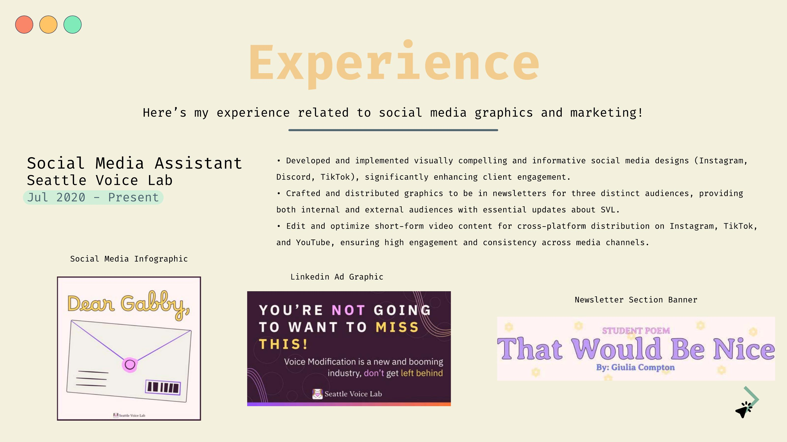
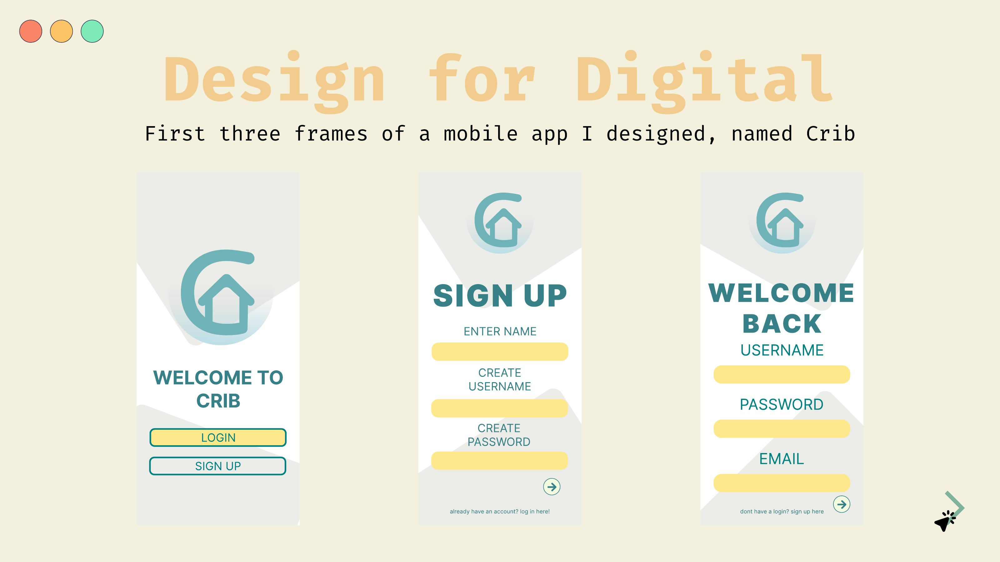
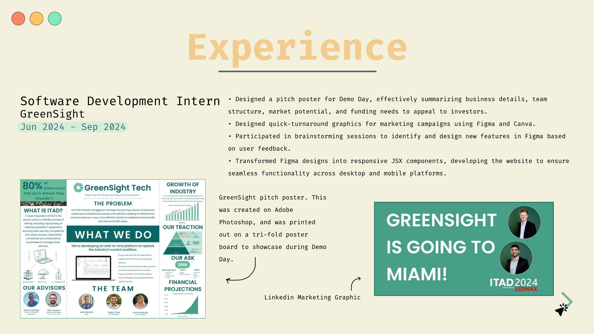
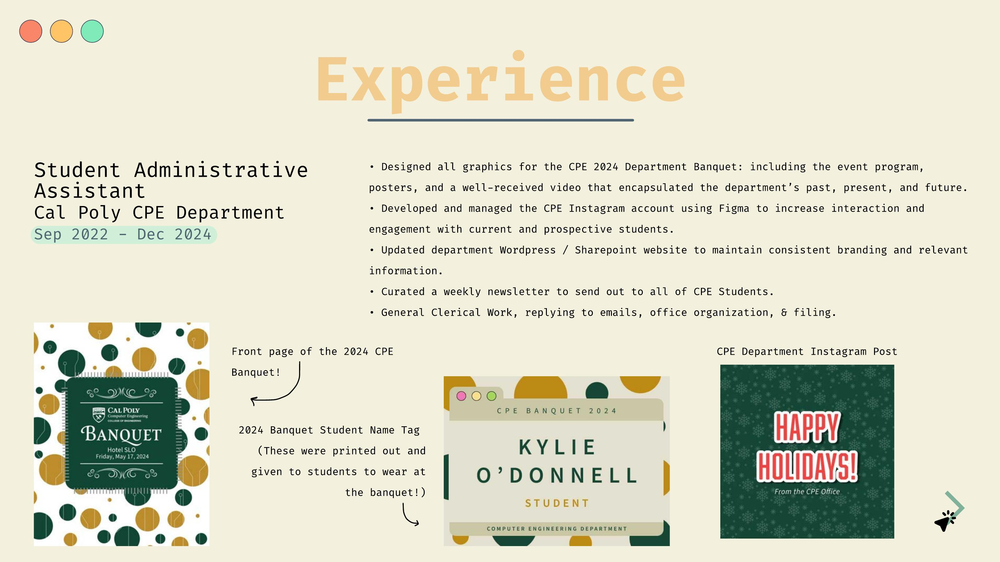
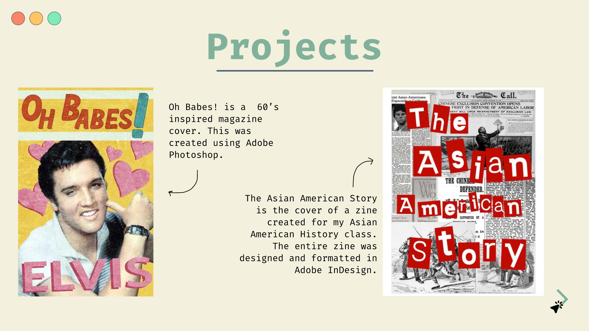

Seattle Voice Lab social design
Instagram, Discord, TikTok, LinkedIn, and newsletter graphics built for internal and external audiences.
Design-focused computer science graduate
I build visual systems, product flows, social graphics, print materials, and case studies with a mix of design judgment and implementation fluency.

About
My work sits between design and development: translating ideas into clean UI systems, production-ready graphics, and stories that explain the user problem clearly. I am especially interested in roles where product thinking, visual design, and technical context overlap.
Selected work

Website redesign
From design concept to full implementation for a refreshed company website experience.

Product case study
A web-based concept for helping Cal Poly students make faster study-space decisions using clearer occupancy information and API-backed data.
Digital design system
Typography, color, components, buttons, icons, and form states for a focused productivity tracking experience.

Mobile UI
Mid-fidelity mobile prototype screens for account creation, welcome-back moments, and a clean first-run product path.
Demos and prototypes
Visual design range

Instagram, Discord, TikTok, LinkedIn, and newsletter graphics built for internal and external audiences.

Quick-turn marketing visuals, a trifold pitch poster, and Figma product brainstorming during a software development internship.

Banquet graphics, programs, posters, videos, department posts, newsletters, and site updates for the Computer Science department.

Magazine covers, zines, band posters, Illustrator experiments, and infographics with a strong editorial point of view.
Videos edited
Cal Poly CPE Department
Edited department event media for the Computer Science and Software Engineering community, supporting banquet storytelling and recognition materials.
Open videoPersonal edit
A square-format edit made from my first-year school photos, originally created for Instagram as a personal recap.
Open videoPersonal edit
A second-year recap edit using school photos, made to capture the fun, personal side of editing and visual storytelling.
Open videoExperience
Jul 2020 - Present
Designs social graphics and newsletters across Instagram, Discord, TikTok, LinkedIn, and email.
Jun 2024 - Sep 2024
Created pitch materials, quick-turn graphics, Figma feature explorations, and responsive JSX interface updates.
Sep 2022 - Dec 2024
Produced banquet, social, newsletter, video, WordPress, and SharePoint materials for the department.
Tools and strengths